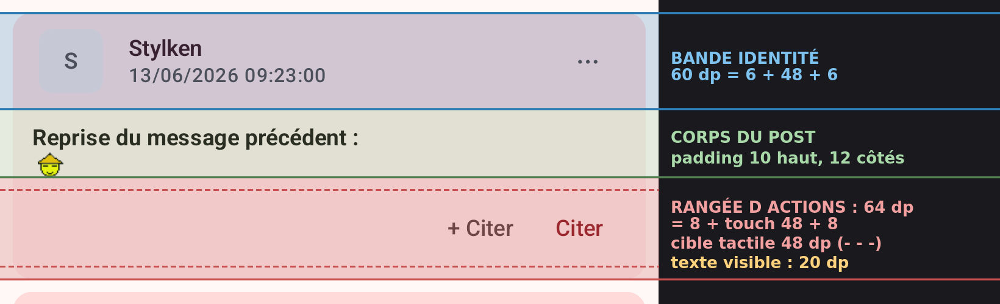
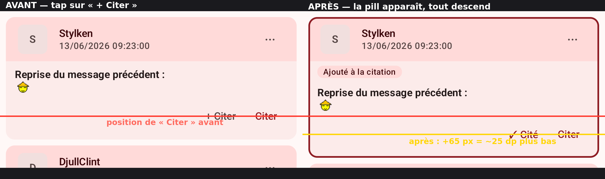

Redface 2 · issue #882
Analyse au pixel (émulateur 420 dpi, préset Confort) recoupée avec le code, co-cadrée avec GPT-5.6 Sol (xhigh). Deux problèmes : la rangée Citer/+ Citer occupe 64 dp pour 20 dp de texte utile, et la pill « Ajouté à la citation » décale tout le contenu de ~25 dp à chaque tap.

La rangée d'actions : 8 dp d'espacement + boutons M3 à cible tactile 48 dp + 8 dp de bas de carte = 64 dp. Les pointillés = cibles tactiles invisibles ; le texte, lui, fait 20 dp.

Trois signaux de sélection coexistent : la pill (qui décale), la bordure primaire (aucun décalage) et le bouton qui devient « ✓ Cité » (aucun décalage). TalkBack annonce l'état indépendamment de la pill.
Le footer perd ses 8+8 dp de marges verticales : la rangée FAIT 48 dp (cible tactile = layout, aucun débordement). La pill « Ajouté à la citation » disparaît — bordure + « ✓ Cité » + TalkBack suffisent. « cité N fois » (stable) reste.
Gain : 16 dp/post (Confort), 9 dp (Compact) ; shift : 0.
Une seule rangée basse de 48 dp porte « cité N fois » à gauche et les actions à droite : le strip conditionnel disparaît complètement (jusqu'à 44 dp gagnés sur un post cité). Risque : collision à faible largeur + grand fontScale avec 3 actions.
Gain : 16-44 dp ; shift : 0. À valider en largeur mini.
Gain maximal (~56 dp : plus de footer du tout) mais la bande sature : pseudo comprimé, 3 cibles de 48 dp collées au « ⋯ », et « Modifier » n'a plus de place. Sol : mauvais compromis.
Gain : ~56 dp ; risques UX élevés.
| Zone | Avant (Confort) | P1 (Confort) | Avant (Compact) | P1 (Compact) |
|---|---|---|---|---|
| Bande identité | 60 | 60 | 56 | 56 |
| Strip « cité N fois » (si présent) | 28 | 28 | ~26 | ~26 |
| Strip sélection (au tap) | 0 → 28 | 0 | 0 → ~26 | 0 |
| Rangée d'actions | 64 | 48 | 57 | 48 |
| Total (non cité, sélectionné) | 152 | 108 | ~139 | 104 |
Garde-fous d'implémentation actés au cadrage : hauteur MINIMALE (pas de max — le grand fontScale ne doit pas clipper) ; cibles ≥ 48 dp réelles sans chevauchement ; tests paramétrés Confort/Compact + « écart exact 0 px avant/après + Citer » + bounds sémantiques des 3 actions.